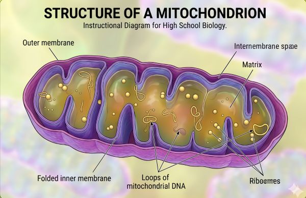

Cell Respiration
Theme C · Interaction and Interdependence · C1.2
Why this matters
Every living cell, from the bacterium in your gut to the neuron firing in your brain, must release the chemical energy stored in organic molecules to power its work. Cell respiration is the controlled, stepwise oxidation of glucose (and other substrates) that traps that energy in ATP — the universal energy currency of life.
The big ideas in this app
- Aerobic respiration oxidizes glucose completely to CO2 and H2O, yielding up to ~30–32 ATP per glucose.
- Anaerobic pathways (fermentation) regenerate NAD+ so glycolysis can continue when oxygen is absent, but yield only 2 ATP per glucose.
- Four stages of aerobic respiration: glycolysis, the link reaction, the Krebs cycle, and oxidative phosphorylation (electron transport chain + chemiosmosis).
- Chemiosmosis: a proton gradient across the inner mitochondrial membrane drives ATP synthase.
How to use this app
Work through the sections in order using the side menu. Glossary terms are underlined — hover or tap for a definition. Your progress is saved automatically.
When you finish, the Compile My Answers page generates a plain-text submission you can paste into Google Classroom.
Aerobic Respiration: The Big Picture
Glucose → CO2 + H2O, with ATP captured along the way
Overall equation
C6H12O6 + 6 O2 → 6 CO2 + 6 H2O + ~30–32 ATPGlucose is oxidized stepwise in four stages. Each stage takes place in a specific location and produces specific products. Click each part of the cell below to explore.
Click a region above
Select cytoplasm, matrix, or inner membrane to see the inputs and outputs of that stage.
What a real mitochondrion looks like

An AI-rendered illustration based on an electron micrograph. Compare it to the simplified schematic above: the inner membrane is heavily folded into cristae, dramatically increasing the surface area available for the electron transport chain and ATP synthase. The matrix — where the link reaction and Krebs cycle take place — is the densely packed interior between the folds, and contains its own DNA and ribosomes.
Locations and totals at a glance
| Stage | Location | Net products (per glucose) |
|---|
Glycolysis
Stage 1 · Cytoplasm · Anaerobic · 6C → 2 × 3C
What happens
Glucose (a 6-carbon sugar) is split (lysis) into two molecules of pyruvate (3-carbon). The pathway uses 10 enzymes, occurs entirely in the cytoplasm, and does not require oxygen.
Track the energy molecules
Step through glycolysis. The counters update with each step.
Net per glucose
- +2 ATP (4 produced − 2 invested) by substrate-level phosphorylation
- +2 NADH from reduction of NAD+
- 2 pyruvate molecules → enter mitochondrion if O2 is present
Practice & Challenge
Test your understanding. Use the Show hint and Show model answer buttons if you get stuck. Free-response answers are saved and added to your Compile My Answers export.
Link Reaction & Krebs Cycle
Stages 2 & 3 · Mitochondrial matrix
The link reaction
Pyruvate enters the mitochondrial matrix and is converted to acetyl-CoA. Each pyruvate loses one carbon as CO2 (decarboxylation) and is oxidized — NAD+ is reduced to NADH. Coenzyme A is added to the remaining 2C fragment.
2 × Pyruvate (3C) + 2 NAD+ + 2 CoA → 2 Acetyl-CoA (2C) + 2 CO2 + 2 NADHThe Krebs cycle
Acetyl-CoA (2C) combines with oxaloacetate (4C) to form citrate (6C). Citrate is then progressively oxidized and decarboxylated, regenerating oxaloacetate. Each turn of the cycle releases 2 CO2, reduces 3 NAD+ → 3 NADH, reduces 1 FAD → 1 FADH2, and produces 1 ATP by substrate-level phosphorylation.
Per glucose, the cycle turns twice (one turn per acetyl-CoA).
Step-through animation
Walk through the link reaction and one full turn of the Krebs cycle. The diagram on the left highlights the active substrate; the panel on the right explains what's happening at that step.
Cumulative through end of Krebs cycle (per glucose)
Terminology check
Drag each term to the matching definition.
The reverse Krebs cycle and the origin of life
The Krebs cycle has a flip side. In some bacteria and archaea, it runs in reverse — consuming ATP and reduced electron carriers (especially ferredoxin) to fix CO2 and water into organic molecules rather than break them down. Step by step, CO2 is added to growing intermediates, and the loop terminates in acetyl-CoA — from which the cell can build pyruvate, amino acids, lipids, and sugars.
Many origin-of-life researchers (Russell, Martin, Lane) propose that a non-biological version of this cycle was Earth's first metabolism. Inside alkaline hydrothermal vents, naturally-occurring iron-sulfur minerals (mackinawite, greigite) catalysed CO2 + H2 → simple organic molecules, with the vent's natural proton gradient supplying energy long before ATP synthase existed. The iron-sulfur clusters at the heart of modern Krebs-cycle enzymes are chemically nearly identical to those minerals — a striking molecular bridge between the rocks of early Earth and life's central metabolism.
Practice & Challenge
Test your understanding. Use the Show hint and Show model answer buttons if you get stuck. Free-response answers are saved and added to your Compile My Answers export.
Electron Transport & Chemiosmosis
Stage 4 · Inner mitochondrial membrane · Oxidative phosphorylation
Key idea
Most of the ATP from aerobic respiration is made here. Electrons stripped from glucose during stages 1–3 are now delivered to the inner mitochondrial membrane by NADH and FADH2. As they pass through a chain of carrier proteins, energy is released to pump H+ ions from the matrix into the intermembrane space, building a proton gradient. The H+ then flow back through ATP synthase, which couples that flow to the synthesis of ATP. This coupling is called chemiosmosis.
Step-by-step
- Delivery: NADH and FADH2 donate electrons to the chain. NADH enters at Complex I (higher energy); FADH2 enters at Complex II (lower energy → fewer protons pumped).
- Energy release: Electrons are passed from carrier to carrier, each more electronegative than the last. Energy released is used to pump H+ across the inner membrane.
- Gradient: [H+] becomes higher in the intermembrane space than in the matrix — both a chemical gradient and an electrical gradient (positive outside, negative inside).
- ATP synthase: H+ flows down the gradient through ATP synthase. The flow rotates the enzyme, which catalyzes ADP + Pi → ATP.
- Final electron acceptor: O2 accepts the de-energized electrons (and H+) at Complex IV, forming H2O. Without O2, the chain backs up — NAD+ and FAD cannot be regenerated, and the Krebs cycle stops.
Step-through animation
Walk through the chain one step at a time. Click any complex for details. The dark panel below is a self-contained viewer — controls live inside it.
Explore the Electron Transport Chain
Click on any complex to learn more. Use the controls to step through the process.
Getting Started
Step 0/15Legend
Total ATP yield calculator (per glucose)
The yield varies (older textbooks gave 36–38) because some NADH from cytoplasmic glycolysis must be shuttled into the mitochondrion, and the membrane is not perfectly impermeable to H+.
Evidence for chemiosmosis
Peter Mitchell, 1961: proposed that the proton gradient was the energy source for ATP synthesis. Predicted that:
- If the outer membrane of mitochondria is removed, adding H+ to the suspending medium increases ATP production. Confirmed.
- When isolated chloroplasts are illuminated, the medium becomes alkaline (H+ are pumped into the thylakoid). Confirmed.
- Isolated chloroplasts kept dark in acidic medium, then transferred to a low-pH alkaline medium, synthesize ATP without light. Confirmed.
Practice & Challenge
Test your understanding. Use the Show hint and Show model answer buttons if you get stuck. Free-response answers are saved and added to your Compile My Answers export.
Anaerobic Pathways: Fermentation
When O2 is absent, glycolysis must be sustained another way
Why ferment?
Without O2, the electron transport chain stops. NADH cannot be reoxidized to NAD+, so glycolysis would halt — every cell would lose even its 2-ATP yield. Fermentation is a workaround: pyruvate (or a derivative) accepts the electrons from NADH instead of O2, regenerating NAD+ so glycolysis can continue.
Net yield: only the 2 ATP from glycolysis. No additional ATP is made in fermentation itself.
Alcoholic fermentation (yeast, plants)
Pyruvate → Ethanal → Ethanol+ CO2 released; NADH → NAD+
Pyruvate is decarboxylated to ethanal (acetaldehyde), which is then reduced to ethanol by NADH. CO2 is a waste product. Used in: bread (CO2 rises the dough), beer/wine (ethanol is the product), and biofuel production.
Lactic acid fermentation (animals)
Pyruvate + NADH → Lactate + NAD+Pyruvate is reduced directly to lactate (no CO2). Reversible — when O2 returns, lactate can be converted back to pyruvate (the lactate shuttle). Used in: skeletal muscle during intense exercise, red blood cells (no mitochondria), some bacteria (yogurt, sauerkraut).
Compare the pathways
| Feature | Aerobic | Alcoholic | Lactic acid |
|---|
Investigation: Yeast Fermentation
Investigation 9.3 (Biozone, p. 269) · Effect of substrate on fermentation rate
Context
Yeasts ferment a variety of sugars to ethanol and CO2. Different yeast strains carry different enzymes, so they can metabolize some sugars but not others. By measuring CO2 evolution from yeast suspensions in different sugar solutions, you can infer which substrates the yeast can ferment.
Method: 10 g active yeast in 50 mL warm water (40 °C). 25 g of substrate dissolved in 225 mL water; mixed with the yeast suspension. CO2 volume measured every 5 minutes for 60 minutes via water displacement.
Run the simulation
Pick a substrate. The simulation generates CO2 data based on the substrate's compatibility with the yeast's enzymes.
Glossary
Key terms for IB Biology C1.2 · alphabetical · respects the language toggle
Challenge Questions
IB-style short and extended response. Type your answer, then check the model.
Compile My Answers
Generate plain text to paste into Google Classroom
Before you submit
- All challenge questions have an answer
- Your name is set correctly
- You've reviewed the model answers
Press "Compile My Answers" to generate the text.